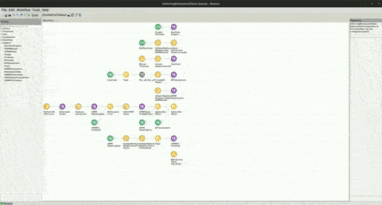

Inferring Behavioral State From Kinematics Example
The code for this repo can be found here.
In the following example, you can see how the Hidden Markov Model (HMM) can be used to infer the underlying hidden state of a mouse that is freely moving and foraging in an open field arena.
Dependencies
If you used the bootstrapping method, you don't have to worry about the package dependencies, as these should be already installed. However, if creating a new environment or integrating into an existing one, you will need to install the following packages:
- Bonsai - Core v2.8.1
- Bonsai - Design v2.8.0
- Bonsai - Editor v2.8.0
- Bonsai - Expression Scripting v2.8.0
- Bonsai - Gui v0.1.0
- Bonsai - ML Hidden Markov Models v0.2.0
- Bonsai - ML Linear Dynamical Systems v0.2.0
- Bonsai - ML Visualizers Hidden Markov Models v0.2.0
- Bonsai - ML Visualizers Linear Dynamical Systems v0.2.0
- Bonsai - Numerics v0.9.0
Warning
This example builds on the LDS Kinematics Foraging Mouse example and requires both the Bonsai.ML.LinearDynamicalSystems package and the Bonsai.ML.HiddenMarkovModels package. See the installation guide to ensure both packages are installed and working correctly.
Workflow
Below is the workflow.
In this example, a Hidden Markov Model (HMM) is used to infer the hidden behavioral state of a foraging mouse. The workflow creates a python runtime (CreateRuntime), and then loads both the HMM module (LoadHMMModule) and the LDS module (LoadLDSModule). The MouseTracking group workflow performs image processing to calculate the mouse's Centroid position. The Centroid is used with InputMapping to initialize a Kalman Filter (KF) Kinematics model (CreateKFModel) with the initial parameters Position_x0 and Position_y0 set to the X and Y values of the Centroid. We set the other parameters of the KF model to be the parameters that we think will best track the animal, though these parameters can also be learned online see the ModelOptimizationForagingMouse example.
We are going to use the absolute velocity and acceleration of the animal as observations to the HMM model. We are going to use 6 hidden states for our model. When we initialize our HMM using the CreateHMM node, we set the Dimensions to 2, for the number of features of our observations, and the NumStates to 6, for the number of hidden behavioral states. The Observations and Transitions parameters will be left to their default values, Gaussian and Stationary, respectively.
Inside of the PerformKFInference node, the Centroid is passed to the Kalman Filter model to PerformInference. The KF model takes the centroid position and infers the full KinematicState (Position, Velocity, and Acceleration for both X and Y dimensions). We perform FeatureExtraction on the KinematicState to transform the full KinematicState into just the absolute velocity and acceleration of the animal, giving us our HMMObservation. The WithLatestFrom node allows us to control when the HMM will start performing state inference when the HMMFitFinished node has emitted a value.
The HMMObservations are fed to the HMM model to asynchronously fit the HMM to the data (RunFitAsync). This process takes some time for observations to accumulate and for the model fitting process to complete. The procedure waits for 1000 observations to be received before fitting to the batch of data. Once the batch has been filled, the model will begin the fitting procedure, and the workflow enters the CheckFitFinished state to test periodically whether or not the HMM fitting procedure has completed. Once completed, the sequence completes with Take, and an event is emitted to the HMMFitFinished node.
Once the HMMFitFinished node emits a value, the WithLatestFrom node emits a value and the workflow enters the InferHMMState node. Inside of this node, the HMM model infers the probability of being in each state given the last HMMObservation, which gets passed to the HMMStateProbabilities.
The BehavioralStateVisualizer group node displays a table of visualizers. The left image shows the original video of the freely moving mouse, along with the KF model's inferred X and Y position. In the middle, the KinematicState is shown as a 3x2 table layout panel, representing the inferred position, velocity, and acceleration along the X and Y dimensions. The graph on the right initially shows nothing, since during the first minute or so the HMM model is accumulating data in a batch. When the batch is full, the model fits to the data and begins running online inference of behavioral state. At this point, the graph will show the state probabilities given the latest observation.
This is how it looks:
